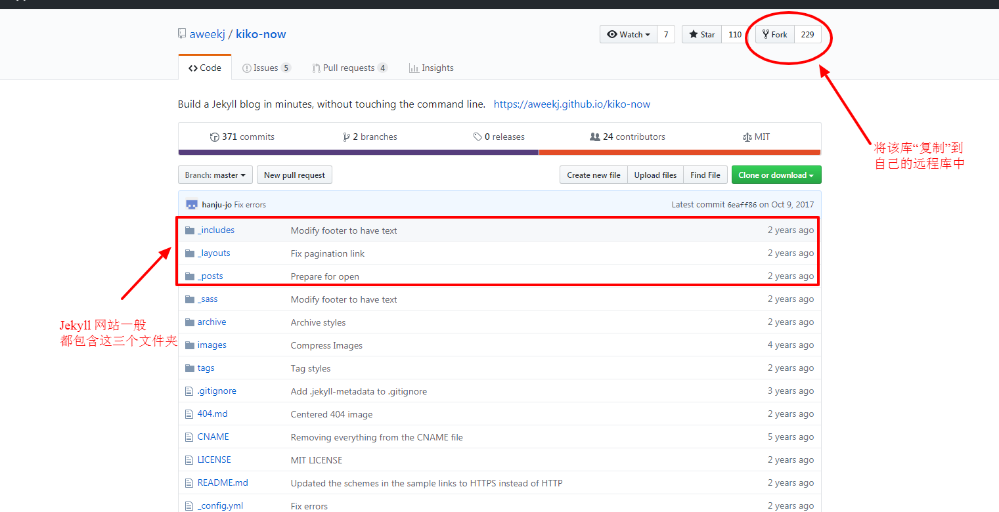
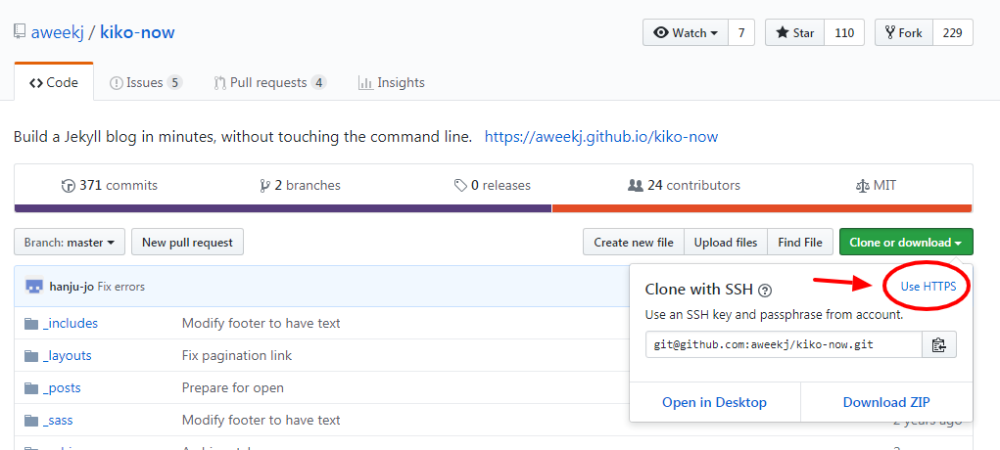
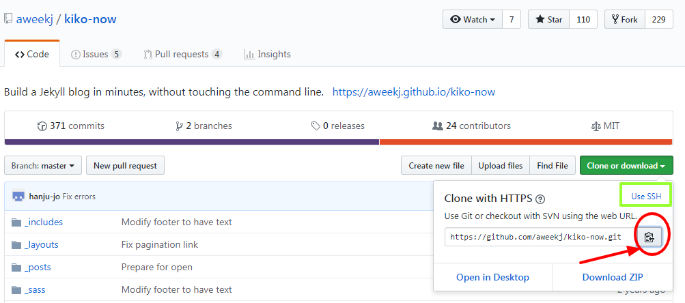

本文介绍了如何在 Windows 上使用 Jekyll 框架搭建 GitHub Pages 个人博客。
使用 Jekyll + GitHub Pages ，可以在短时间内搭建出精美、个性的博客、项目网站或者线上简历等。我们只需要专注于编辑文章内容，将文章放入预设的模板（主题）中，再将全部文件提交到 GitHub 上，网站就会自动完成构建了。
使用 Jekyll 搭建的博客案例：
搭建 GitHub Pages - 极速尝鲜
如果你是零基础的话，现在用最快最简单的方法搭建一个 GitHub Page 吧！
如果想更加个性化地使用 GitHub Page，可以直接跳过这一步。
本地编辑的技能可以尝鲜之后再慢慢补上嘛。
第一步：获取 Jekyll 模板，生成网站
如果没有 GitHub 账号，先在 GitHub 上注册一个。
登录 GitHub，从以下 Jekyll 官方收录的主题中选择一个中意的样式，然后打开其 GitHub 项目界面。
以 Kiko Plus 主题为例，点击 Homepage 找到项目主页。
也可以进入示例（Demo）页面，点击页面最下方的 GitHub 按钮进入项目主页。大多数主题的项目主页都可以这样找到。
进入 kiko-now 项目主页，根目录文件结构应该类似这样：

点击 Fork 按钮，从而将这个库复制到自己的远程库中。
进入自己的 kiko-now 库，在 Settings 里将库名改为 <你的用户名>.github.io，比如 honghzh.github.io。
此时，GitHub 会自动识别这个库，并基于库里的文件（也就是你刚刚“复制”的 Jekyll 主题模板文件）自动构建你的 GitHub Page。
在许多主题项目的 README.md 中也会有使用说明。
等待片刻，直接访问 <你的用户名>.github.io，就可以看到自己的博客了。
第二步：定制博客信息
在你的网站项目库中，打开根目录的 _config.yml，按照文件中的提示修改文件，把原来的博客信息（姓名、邮箱、github地址、文章网址格式等）改成你自己想要的配置信息，然后提交（Commit）即可。
第三步：写文章
在你的网站项目库 _posts 文件夹中，新建一个 .md 文件，模仿原有的示例文件编辑文件头部（配置标题、发表时间等，常用配置规则），然后使用 Markdown 语言写文章（Markdown 简明语法规则），保存提交（Commit）即可。
每篇文章的 markdown 文件都必须命名为 year-month-day-title.md 格式，这是 Jekyll 框架所要求的。
等待片刻，直接访问 <你的用户名>.github.io ，会发现博客信息已经变味你自己的，而且文章也更新了。
如果文章没有出现，可能是文件命名有误，或者发表时间有误（或时区问题导致现在尚未到发表时间）。
现在你已经成功使用 Jekyll + GitHub Pages 搭建出个人网站了！
如果你还想：
- 在本地用你喜欢的编辑器编辑文章
- 在本地实时预览文章效果和博客修改效果（本地预览比 GitHub 在线构建快得多）
- 在已有主题（或空白主题）的基础上，设计自己的博客样式
- 喜欢那种随心支配所有代码、掌控全局的感觉（比如我）
那么请看下面的完整版：
Jekyll + GitHub Pages 本地调试与线上搭建
在 GitHub 上的准备
首先，在 GitHub 上注册一个账号。
注意：接下来的步骤与前一节（极速尝鲜版）不同
登录 GitHub 后，访问 https://github.com/new 可以开始新建一个库（或点击顶部 + 号按钮 -> New repository），库名（Repository name）必须设为 <你的用户名>.github.io，选择库的类型为公共库（Public），从而创建一个新库，用于在 GitHub 上存放你的网站。
如果这个库已经存在，那么需要把原库先改名或删除。
本地调试所需的准备
因为 Jekyll 框架是基于 Ruby 语言构建的，所以，如果要在本地编辑和预览，你的计算机显然也要学会 Ruby 语言。
安装 Ruby
在 Windows 系统安装 Ruby 很简单。直接访问 Ruby Installer for Windows下载安装程序，注意要下载 Ruby + DevKit 的集成版本，其中 DevKit 是 Ruby 的开发工具包，后续安装 Jekyll 框架时必须用到它。
然后，一路安装即可，安装完成的最后会询问是否安装开发者工具（MSYS2 Devkit），选择“是”。
安装 MSYS2 Devkit 时，会询问安装的范围，选择 1 或 3 安装整个开发工具包（MSYS2 toolchain）。
修改 RubyGems 的默认下载源
Ruby 安装完毕后，需要使用 Ruby 自带的包管理工具（RubyGems）安装 Jekyll 包。
RubyGems 默认下载源在国外，由于众所周知的原因，国内下载 Jekyll 等包的速度奇慢，因此需要先把下载源改为国内的官方镜像。
打开命令窗口（可以按Shift后从右键菜单打开），依次执行：
gem sources --add https://gems.ruby-china.com/ --remove https://rubygems.org/
gem sources -l
# 将显示 https://gems.ruby-china.com
# 确保只有 gems.ruby-china.com
修改完成。
安装 Jekyll
因为我们要用 GitHub Page 构建网站，所以这里强烈推荐 GitHub Pages Gem 项目提供的 github-pages 包，它集成了 Jekyll 和 Jekyll 所需的所有依赖包（Dependencies），并且所有包都维护在 GitHub Page 支持的版本下。
推荐直接安装 github-pages 包（其中集成了 Jekyll），命令是：
gem install github-pages
这样就可以避开很多的版本依赖和版本支持的问题。
安装 Git
Git 是一个版本控制工具，Git 在这里用于关联和管理 GitHub 上刚才新建的远程库和本地的网站文件夹（本地库）。
Git 是 GitHub 存在的基石。被 Git 工具所维护的文件夹叫做“库”（Repository），本地的文件夹就是本地库，在服务器上的文件夹就是远程库。GitHub 只是一个托管远程库，方便远程协作和储存版本的平台罢了。
从 Git 官网 上下载 Git 并安装即可。安装完成后，右键菜单会多出 Git Bash Here，点击后可以打开 Git 命令行，后续会在里面运行 git <命令>。
安装文本编辑器
文本编辑器是一种编程工具，主流的编辑器有 NotePad++, Vs Code, Sublime Text 等，它们可以在编辑代码时提供高亮、提示、编译等功能。
如果本地没有文本编辑器，推荐安装VS Code，之后将使用文本编辑器打开/编辑本地的网站文件。
本地调试
从以下 Jekyll 官方收录的主题中选择一个中意的样式，然后打开其 GitHub 项目界面。
使用 git clone 命令将主题项目下载到本地。
以 kiko-now 项目为例，首先在项目主页复制 git clone 的目标地址：


然后在本地右键 - Git Bash Here，执行 git 命令：git clone <目标地址> 即可：
git clone https://github.com/aweekj/kiko-now.git
在项目根目录，命令行运行 jekyll serve，然后在浏览器地址栏中输入 localhost:4000 即可访问本地预览。
在命令行窗口连续按 Ctrl+C ，再输入 y 确认退出，即可退出本地预览。
配置博客信息、写文章
修改根目录的 _config.yml，即可配置自己的博客信息。注意，这个文件修改保存后，需要重新运行 jekyll serve 才能看到修改效果。
在 _post 文件夹下新建 .md 文件，按原有示例文件的格式输入文件头部（配置标题、发表时间等，常用配置规则），然后使用 Markdown 语言写文章（Markdown 简明语法规则），保存即可。
每篇文章的 markdown 文件都必须命名为 year-month-day-title.md 格式，这是 Jekyll 框架所要求的。
文章编辑过程中，可以随时保存，并刷新 localhost:4000 查看最新的预览。
编译
可选步骤：命令行 jekyll build 将编译网站文件，编译好的网站文件默认位于根目录的 _site 文件夹中。
提交生成 GitHub Page
提交到 GitHub 上的两种形式：
- 可以直接将
_site文件夹内的文件提交到 GitHub（需先用jekyll build编译）。 - 也可以将整个网站文件夹提交上去（此时无需用
jekyll build编译）。
方法：
- 前期准备时，在 GitHub 上有一个名为
<你的用户名>.github.io的库，现在将它git clone克隆到本地（在模板文件夹的外部），作为本地网站文件夹。 - 按上述两种形式中的一种，将所需文件复制进刚才
git clone的文件夹内。 在本地网站文件夹内，
右键 - git bash here，依次执行下列命令：git add . git commit -m "<提交版本的名字，自定义>" git push origin master
- 如果复制文件到本地网站库时，你是将整个主题项目库复制进去的，那么以后可以直接在本地网站库中修改、预览，最后执行以上三条命令，即可将修改推送到自己的 GitHub 上。
- 如果只复制
_site文件夹，那么需要在主题项目库中编辑、预览，然后重复上述方法来更新网站。
片刻之后，直接访问 <你的用户名>.github.io 即可查看你的博客网站，效果与本地预览相同（除某些特殊插件效果外）。
Well done !